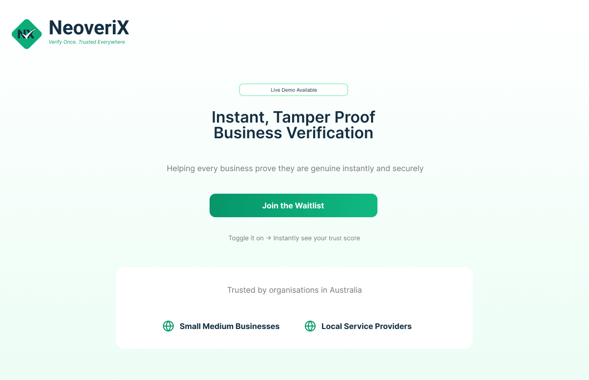

Click to enlarge
Personal Project
NeoveriX
Landing page for a business verification platform concept targeting Australian SMEs and charities. Built as part of the UNSW New Wave entrepreneurship program focused on clear content structure, user-friendly layout and communicating trust to a non-technical audience.
- Structured content hierarchy to communicate trust clearly to a non-technical audience
- Designed page layout in Figma ensuring clear content flow and user journey
- Built responsive layout in HTML & CSS from scratch
- Applied accessibility best practices throughout
- Ensured content accuracy and consistency across all sections
HTMLCSSFigmaContent Publishing